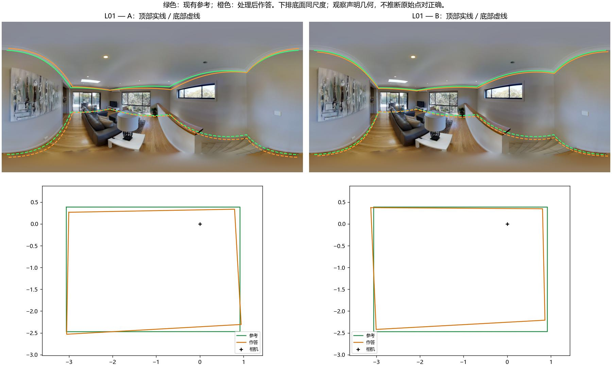
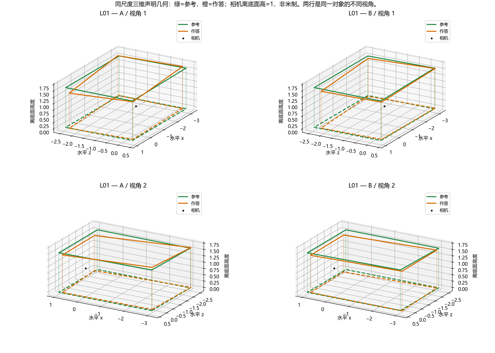

L01已收到审核及澄清：整体接近，三维B略好，二维图A更接近GT。查看原话回执。下方材料保持原绑定。
人工回执按题目及观察视图另行保存；未展示候选分数，也没有预设正确答案。请按各题说明比较，近似或无法判断均为有效回答。绿色参考不是不可质疑的真值；如参考不可信请直接指出。这是既有开发图片，不是独立验证。图片是原照片上的声明几何投影，不推断边界可见性。
局部顶部起伏的差异是否明显？结合照片和底面，两份整体质量接近，还是其中一份明显更好？可回答无法判断，并指出参考可能的问题。

绿线参考，橙线作答；底面虚线，相机黑点。相机高=1，非米制。两侧保持同尺度、同视角；线框不表示遮挡或真实可见性。

三维为处理后声明几何，非房间实测；绿色参考也可能有误。请区分底面、二维顶部投影和三维高度判断。
答复格式：L01：A / B / 近似 / 无法判断；差异：不明显 / 明显 / 不确定；位置与理由。